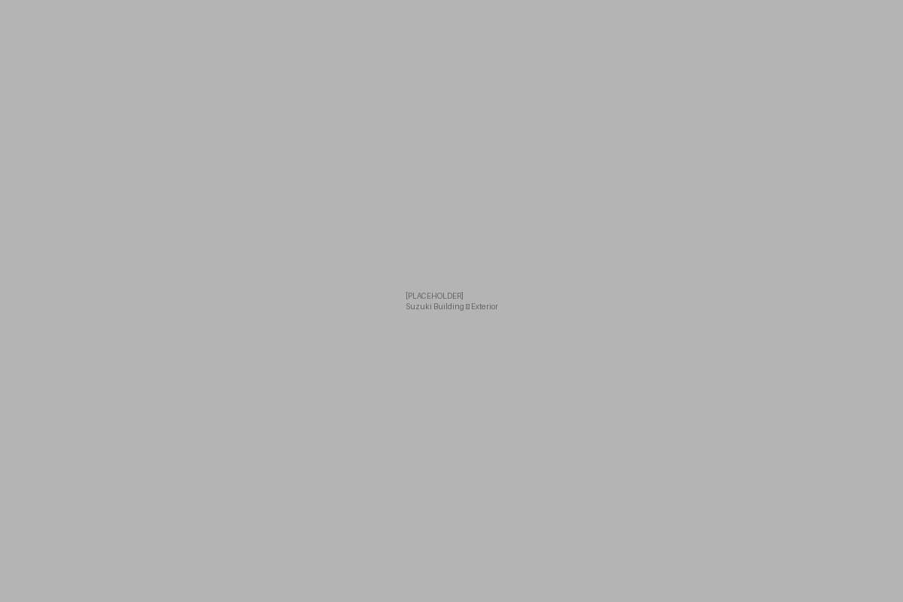
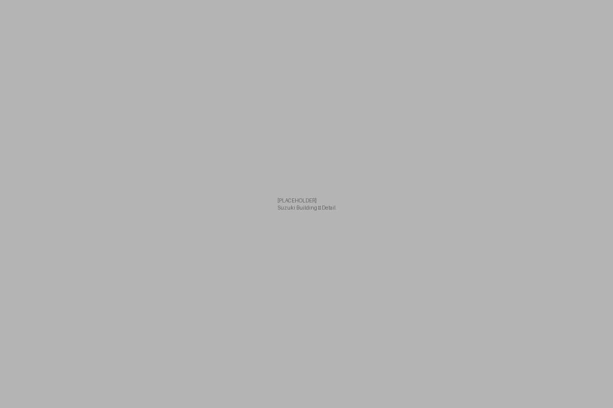

About Us
Like a Canvas
300枚から3万枚まで、
変わらぬ精度で。
企画・製造・納品まで、体験を手元に残すものづくり。
株式会社Aoiは、OEMグッズの企画・製造・納品を一括で手がけ、アパレル、雑貨、パッケージ、ノベルティなど、用途に応じたアイテム制作に対応しています。
デザインの提案から、国内外の工場との直接交渉、品質管理、輸入物流まで、すべての工程を自社で管理することで、発注者の負担を最小化します。
「Like a Canvas」という名称には、白紙のキャンバスに向き合うように、依頼者のアイデアをゼロから形にするという意味を込めています。
グッズ制作に関わるすべての工程において、同一のチームが一貫して関与することで、仕様や品質の精度を保ちます。
ライブグッズは、音楽体験を
一緒に持ち帰ってもらえるもの。
コンサートグッズの制作においては、アパレルを中心に多数の実績を持ちます。グッズは単なる物品ではなく、イベントの体験と結びついた記憶の媒体として機能します。ファッションと音楽の関係性が密接な現代において、素材・デザイン・品質の三点が揃って初めて、その価値が成立すると考えています。

Exterior
DetailOur Place
拠点は、東京都中央区銀座1丁目に位置する鈴木ビル。1929年竣工、アールデコ様式の外装を持つこの建物は、東京都指定歴史的建造物に選定されています。
1939年、国際グラフ誌『NIPPON』を制作した日本工房がこのビルに移転しています。日本工房は、ドイツで報道写真を学んだ名取洋之助を中心に1933年に組織された制作集団で、写真・グラフィック・編集を横断するビジュアルコミュニケーションの手法を確立しました。
1964年東京オリンピックのポスターで知られるグラフィックデザイナー・亀倉雄策も、この場所を拠点に活動したひとりです。
日本のクリエイティブの原点ともいえる場所で、株式会社AoiはOEMグッズ制作を通じた新しいものづくりの実践を続けています。
Company
| 社名 | 株式会社Aoi |
|---|---|
| 所在地 | 〒104-0061 東京都中央区銀座1丁目28-15 鈴木ビル 3B |
| 事業内容 | OEMグッズ制作（デザイン〜製造〜納品の一括対応） |
| 対応ロット | 300枚〜（大ロット50,000枚以上の実績あり） |
| 対応サービス | カスタムプリント / フルオーダーアイテム / パッケージング / 商品撮影 |
| 物流対応 | 船便（コンテナ20ft/40ft対応）/ 航空便 / 混載便 — 納品日・納品数・予算に応じて最適な手配 |
過去制作事例